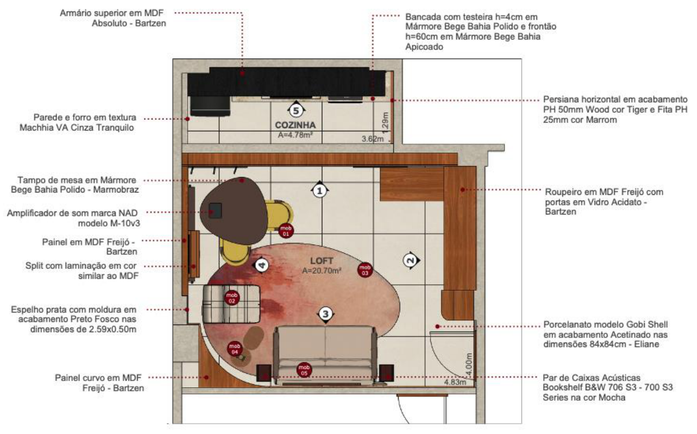
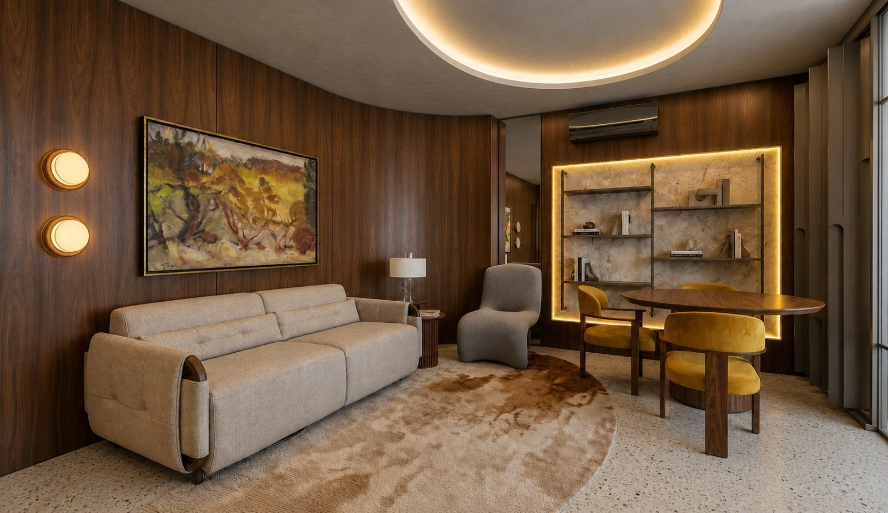
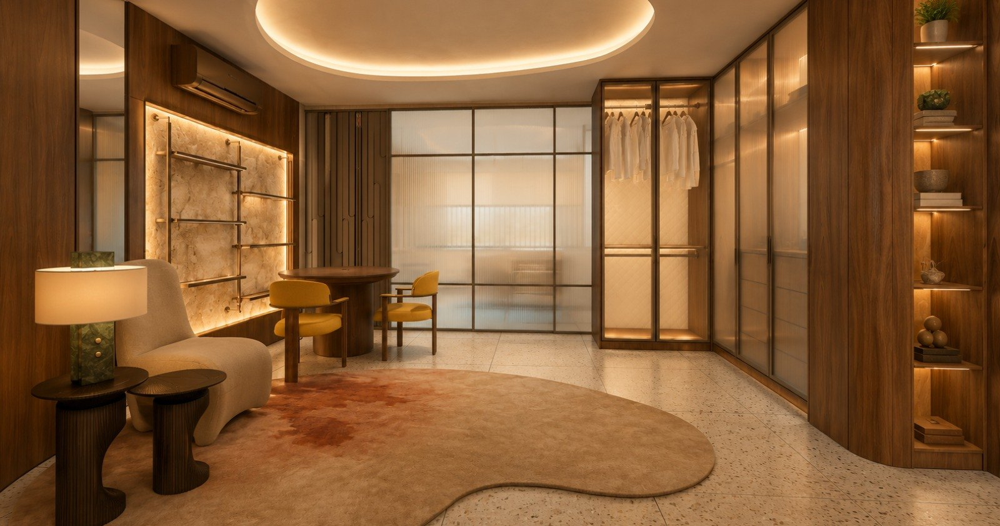
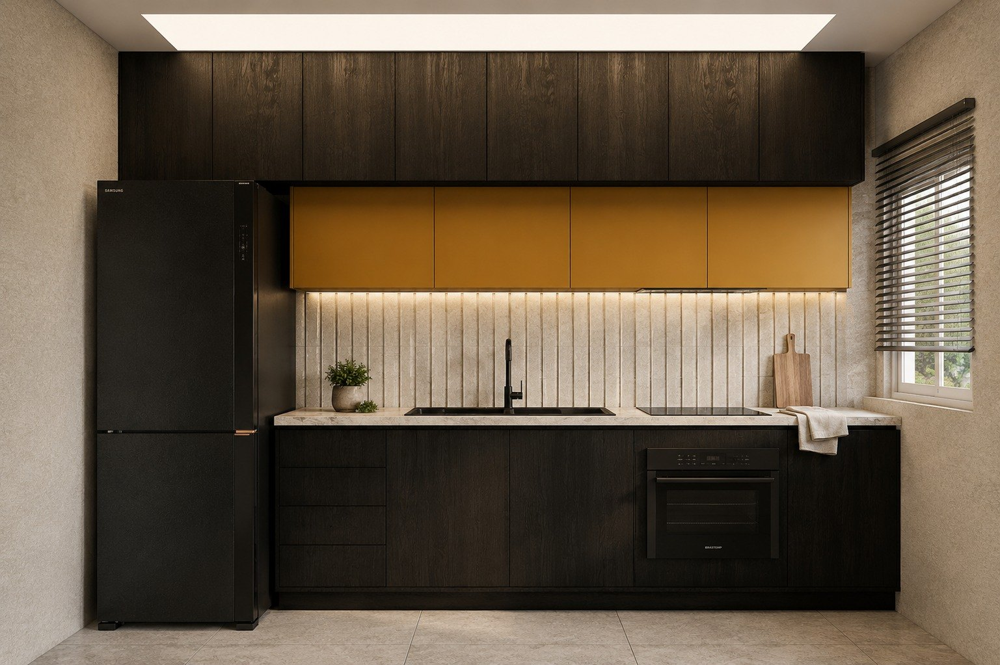
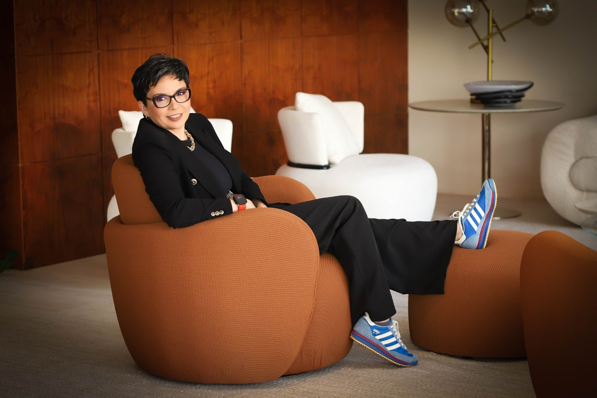
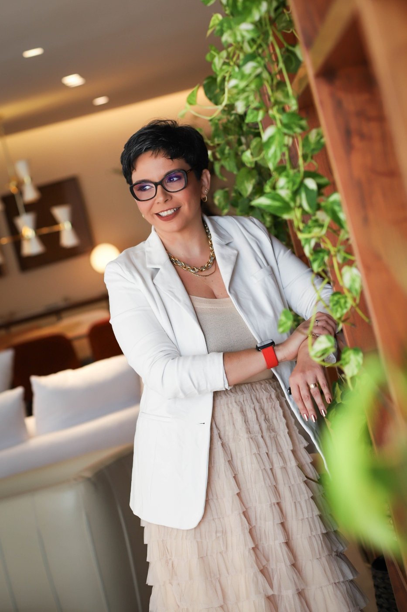
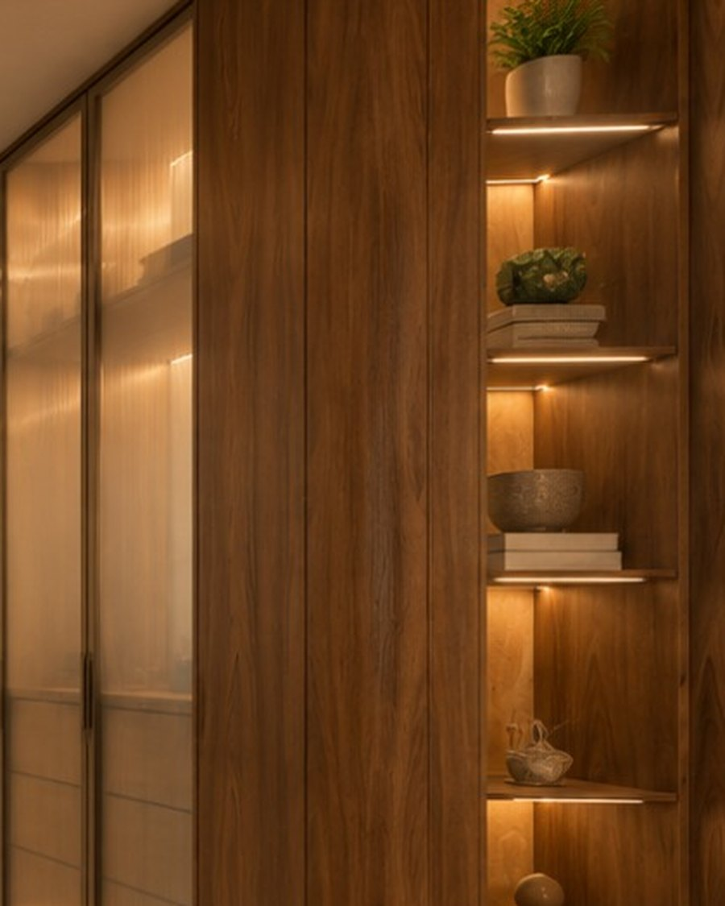
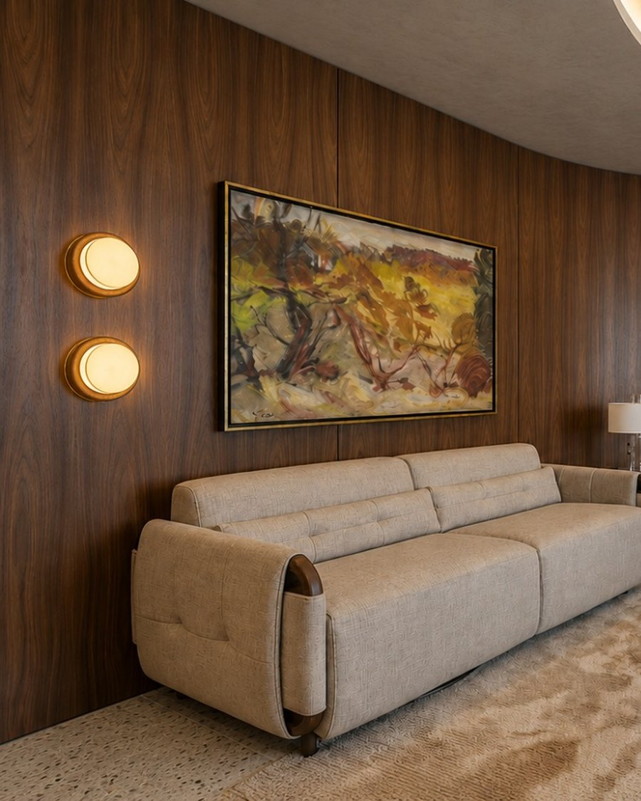
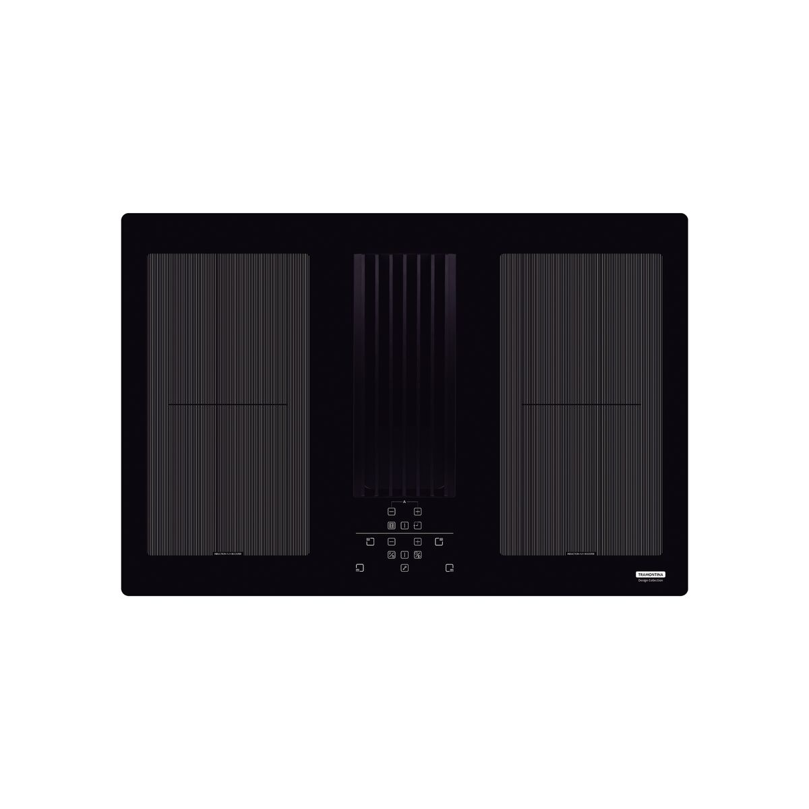

+ apresentam
+ apresentam
Um loft assinado por Studio TM · Tatiane Madeiro
Bossa é jeito. É a forma brasileira e paraense de habitar com leveza e presença.
O Studio Bossa nasce como um loft integrado, pensado para o morador contemporâneo que trabalha, recebe, descansa e se arruma no mesmo espaço.
Sala de estar e jantar, home office, closet e cozinha se integram em um único ambiente fluido, com funções e fluxos definidos por planos, luz e materialidade.

Borogodó é o que não se explica, mas se sente.
É a textura do couro sob a mão, o cheiro de móvel planejado recém-instalado, a luz que muda de intensidade, o amarelo que aquece um ambiente sóbrio.
O Studio Bossa carrega esse tempero brasileiro — a alma do ato de morar traduzida em arquitetura contemporânea, sem perder a informalidade elegante que é a marca registrada do jeito paraense de receber.

Sofá em couro, poltronas em tom mostarda, adornos e obra autoral compõem o primeiro acolhimento. O painel decorativo e a mesa orgânica no centro do loft servem para reunir, trabalhar, jantar e conversar.

Portas em vidro acidato e estrutura em freijó: a peça ilustre do cenário, que organiza sem fechar o ambiente.

Móvel planejado, marmoraria canelada e módulo aéreo amarelo: funcionalidade com atitude.
Texturas e cores como assinatura cromática, com referência no design brasileiro.


Studio TM · Arquitetura · Engenharia · Design
Projeto, técnica e borogodó em cada detalhe.
À frente do Studio TM, Tatiane Madeiro une arquitetura, engenharia e design em projetos autorais do início ao fim.
No Studio Bossa, traduz a essência do escritório — técnica, sensibilidade e identidade aplicadas ao dia a dia de quem quer viver bem — em um espaço atemporal para o morador contemporâneo.
@tatianemadeiro_arqeng





A Bartzen nasceu em 1994 em Bom Princípio, na Serra Gaúcha, fundada por Afonso Bartzen. Em três décadas, tornou-se referência em móveis planejados sob medida para cozinhas, dormitórios, closets, livings e banheiros — com a liberdade de ajustar altura, largura e profundidade de cada módulo ao espaço e ao jeito de viver de quem mora nele.
Desde 2022, faz parte do Grupo K1, sediado em Tupandi (RS) e um dos maiores grupos moveleiros da América Latina. A fábrica produz a própria laca, com tinta italiana, além de portas de alumínio, metalon e vidros, com acabamento de alto padrão em cada projeto.
A história começa na década de 80, em Abaetetuba (PA), com a Ultralar — fundada pelo Sr. Raimundo Ailton Ferreira Dias com o apoio do filho, Armando Contente Dias. Com o lema “Tudo para o Lar”, tornou-se referência no varejo do Baixo Tocantins.
Em 2013, a família levou esse jeito de receber a Belém e inaugurou a Casa Contente: uma loja que vai além da venda de produtos, criada para acolher, inspirar e fazer as pessoas se sentirem verdadeiramente contentes.
Do popular ao alto padrão, o Grupo Contente reúne móveis, eletros, decoração, utensílios e, desde agosto de 2025, os móveis planejados Bartzen — com a franquia instalada na loja da Doca.